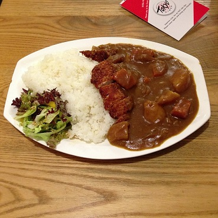
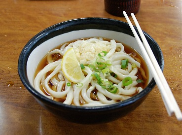
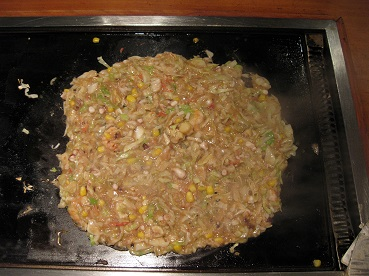
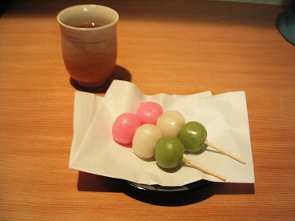

¡Bienvenido a Taberu, tu Portal de Gastronomía japonesa!
Aprende recetas, historia y cultura de los mejores platos japoneses
¿Qué encontrarás aquí?
Enlaces
¡CONOCE NUESTROS PLATOS!

Típicos

Fideos

Yaki

Dulces